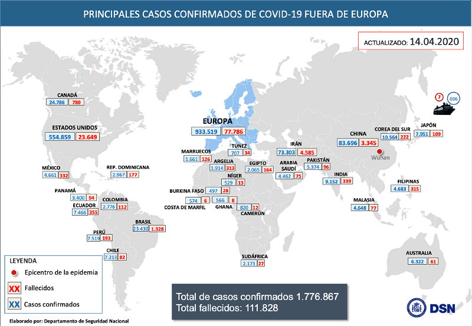

Herramientas informáticas contra el Covid-19
En esta sección se presentarán y contestarán preguntas sobre como diferentes herramientas informáticas
pueden ayudar a tomar medidas contra el coronavirus, de esta manera nos permitirá implementar sistemas
que nos faciliten la detección, atención y seguimiento de pacientes sospechosos de contagio
por COVID-19.
¿Qué herramientas informáticas utilizarías para ayudar a determinar posibles sitios de contagio
masivo?
En la actualidad contamos con muchas herramientas informáticas que nos pueden ayudar a detectar,
posibles sitios de ocurrirán contagios masivos, ayudándonos del uso de la estadística para determinar
lugares en los que se esten dando contagios, y utilizar los datos de estos, por ejemplo, el
tiempo que ha tardado en tener un cierto número de casos y como han ido aumentando y disminuyendo
con el tiempo.
Obteniendo los datos con el uso de la estadística podemos utilizar herramientas que nos ayuden
a determinar los posibles sitios de contagio, con estos datos es posibles crear Apps y Aplicaci
ones web en donde muestren los casos alrededor del mundo y con datos estadísticos se puede estimar
cómo será en otros países

¿Cómo se estructuraría una base de datos para el seguimiento de pacientes sospechosos de contagio
por COVID-19?
Una base de datos ayudará mucho, no sólo en la contingencia actual si no para el futuro utilizando
los datos de esta para ayudar a predecir y actuar más rápidamente. Para esta contingencia las
bases de datos sirven para llevar un registro de los casos alrededor del mundo.
La estructura que podría llevar una base de datos que podría llevar una base de datos para el
seguimiento de pacientes sería la siguiente: primero que nada sería más fácil que cada país
llevarara el registro de una, de hecho en la actualidad los países si llevan el registro
como es evidente, para llevar le registro de los pacientes sospechoso es necesario
separar los casos de sospecha, por región, estado, ciudad, para de esta manera tener datos
concretos, después es necesario registrar la edad de los pacientes, su género y otros datos como
por ejemplo, el estado de salud. También es necesario llevar registro de el tiempo en que han
presentado síntomas y los síntomas que se han presentado.
¿De qué manera se pudiera hacer accesible y editable la base de datos propuesta en la actividad
anterior, desde teléfonos móviles por parte del personal de salud que atiende a la población?
Una página web o una aplicación móvil sirven de mucho a la hora de mostrar los registro de una
base de datos, para el personal de salud puede consultar las bases de datos de su establecimiento,
estos establecimientos muchas de las veces ya cuentan con una página web o con una aplicación
móvil.
Para hacerla editable sería más difícil implementarlo, si no es una base de datos interna, ya
que la información muchas veces no viene de estos establecimientos, y no sería factible que
varias personas puedan editar información de este tipo.
¿Qué herramientas tecnológicas se utilizaría para detectar posibles portadores del virus en una
estación del Metro?
En este caso una apilicación móvil puede ser de gran ayuda para mostrar estimaciones de casos
de contagio, de hecho países como China han implementado aplicaciones de este tipo que muestran
casos de Covid-19 en cierta región y varios paises alrededor del mundo piensan implementar
sistemas como este.
¿Qué dispositivos se emplearía para que los responsables de filtros sanitarios reciban información
útil en tiempo real para dar seguimiento y atención a los posibles casos de riesgo de contagio?
En este casos un sistema, una aplicación móvil o una página web sirven para mostrar los datos en
tiempo real para así los responsables de sitios sanitarios esten informados sobre los datos
de la contingencia que ocurren en una cierta región.
¿Qué elementos debe tener una interfaz gráfica de una app, para que al personal de filtros
sanitarios le proporcione información útil sobre posibles personas infectadas por el COVID-19,
y que información desplegaría cada uno de los elementos?
En una aplicación de este tipo es importante que la interfaz sea accesible e intuitiva y que
muestre los datos de un manera clara y concisa, para sí poder agilizar los procesos al momento
de consultar la información, además debe incluir gráficos de información, debe contar con varias
secciones ubicadas en un menu para que sean fácilmente accesibles.